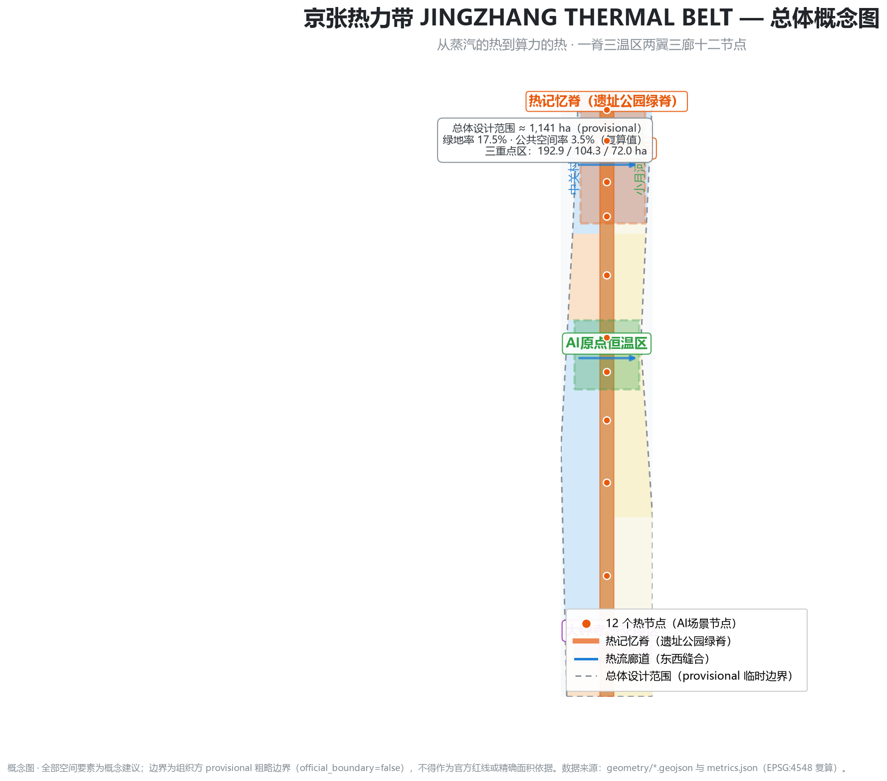
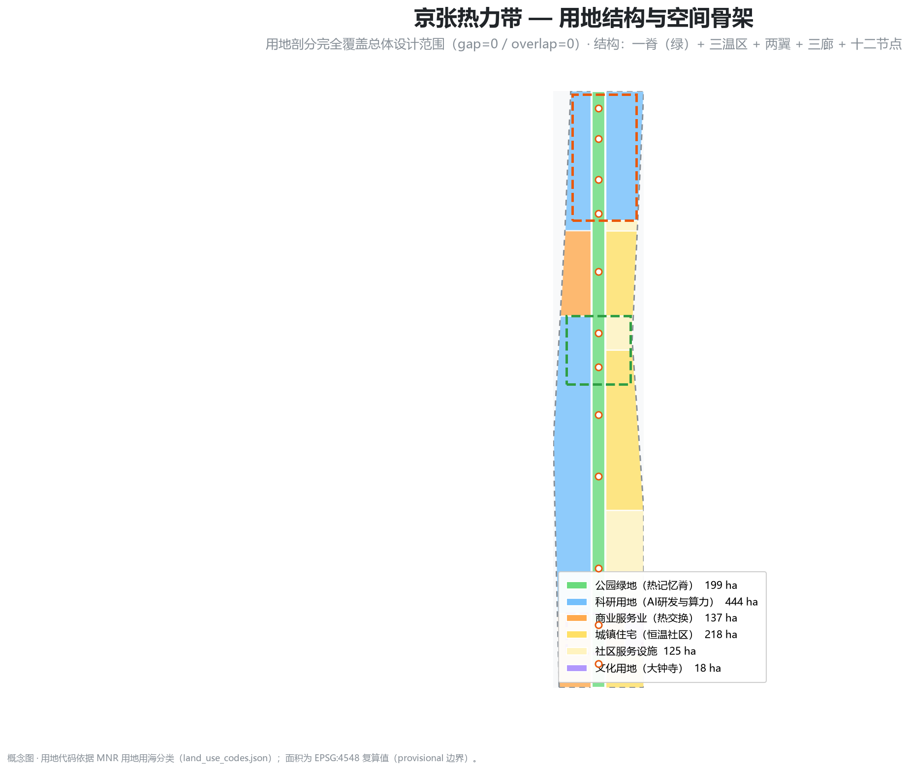
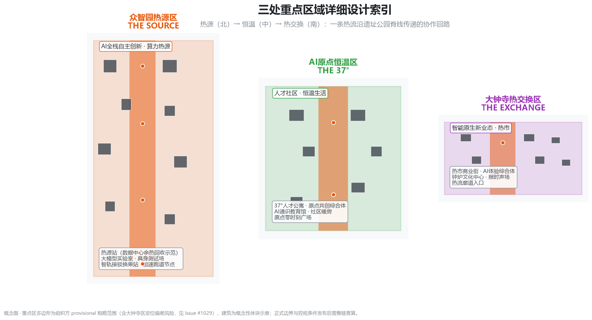
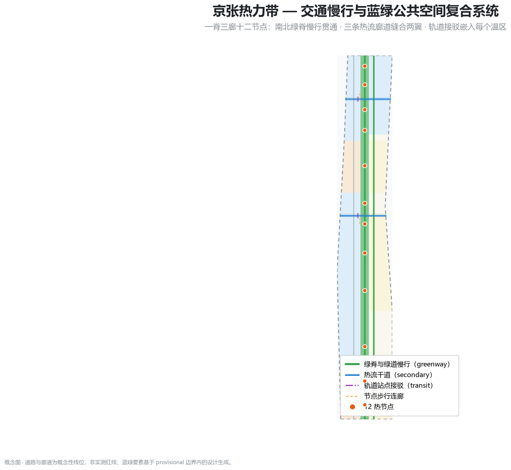
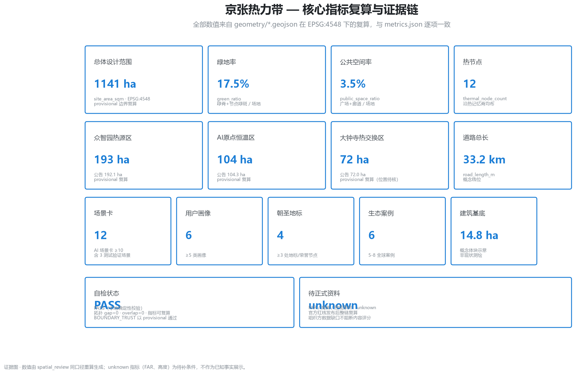

京张热力带 JINGZHANG THERMAL BELT：从蒸汽的热到算力的热——百年京张AI创新带城市设计概念方案
以「热」为贯穿百年铁路、中关村产业与AI算力的第一性线索：把43.6平方公里统筹范围组织为热记忆、恒温生活、热流创新三条主题带，在11.4平方公里总体设计范围构建「一脊三温区两翼三廊十二节点」空间骨架，热源（众智园）→恒温（AI原点）→热交换（大钟寺）三区联动，以算力余热回收、温度感知公共空间与AI报时文化塑造可体验、可复核、可复算的AI创新带。
京张热力带 JINGZHANG THERMAL BELT：从蒸汽的热到算力的热
一百年前，这条铁路把热变成动力；一百年后，这座城要把热变成智能。 —— 方案总体叙事
设计依据与资料清单
本方案以北京市规划和自然资源委员会海淀分局《百年京张AI创新带城市设计国际方案征集资格预审公告》为第一权威依据 来源 标准，以 brief/site-package/ 机器可读任务书（三层范围、三区两翼、允许设计空间、枚举、指标区间与临时边界）为生成依据 来源，以面向智能体开源征集任务书为六项任务与统一边界条款依据 来源 标准。资料可用性边界按中央登记表区分 formal/背景/provisional 来源，本包实际使用的每项来源完整登记于 sources.json。
官方精确红线与三处重点区多边形尚未发布，本包采用组织方 provisional_boundaries.geojson 的临时粗略范围 来源 来源：geometry/site_boundary.geojson#SITE-001 为总体设计范围（EPSG:4548 复算 1,141.3 ha，公告约 1,140 ha）空间数据 指标。临时边界仅用于生成、展示与讨论，不得作为官方红线、审批依据或精确面积依据；官方边界发布后需按 assumptions.json#A-PROV-BOUNDARY-001 整链复算。大钟寺区临时范围可能偏离实际位置（社区 Issue #1029 已提出核验），本方案已按 A-KEY003-OFFSET-001 披露 来源。组织方数据缺口不阻断内容评分 来源。
方案总体概念为「京张热力带」：把"热"作为贯穿百年京张铁路、中关村产业与 AI 算力的第一性线索——蒸汽锅炉的热（工程自主）、电子产业的温（创业温度）、算力集群的热（智能动力），并以"驾驭热、利用热、感知热"组织空间、场景与运营。现状诊断基于公开资料与 OSM 基础地理 来源 深度：场地沿京张铁路遗址公园南北展开约 9.7 km，东西宽 1.2-1.5 km，穿行高校集聚区、成熟居住区与轨道网络，东西向联系弱、南北向公共空间连续性强。

三层范围工作框架
三层范围按公告要求逐级落实 深度：
| 层级 | 面积 | 工作目标 | 本方案落点 |
|---|---|---|---|
| 统筹研究范围 | 43.6 km² | AI 创新生态、未来城市形态、三区两翼协同 | 热力带产业-空间-运营总框架（本章与下一章） |
| 总体设计范围 | 11.4 km² | 城市更新总体框架、控规深度城市设计 | 一脊三温区两翼三廊十二节点（第 4、7、8、9 章） |
| 重点区域范围 | 368.4 ha | 三片区规划综合实施方案深度 | 热源区/恒温区/热交换区详细设计（第 5 章） |
三层范围的传导逻辑是"热流"：统筹层定义热从哪里来（高校策源、算力集群、产业资本）、怎么流（创新链、人才流、数据流）、到哪里去（公共体验、全球传播）；总体层把热流转译为空间骨架（脊、区、翼、廊、节点）与支撑系统（交通、市政、蓝绿）；重点层把骨架落为可运营的街区（热源站、37° 社区、热市）深度。

统筹研究范围产业与未来城市研究
命名、Logo 与视觉识别（agent.1）
主名称「京张热力带」，英文 JINGZHANG THERMAL BELT（JZ-TB），视觉符号为「轨上热浪」：以钢轨工字截面托起三条上升热浪线，对应百年京张文化带、都市AI生活体验带、AI融合创新带三大定位 来源；色彩系统为钢蓝（#1C7ED6，工程与理性）× 炽橙（#E8590C，动力与热力），辅助 37° 恒温绿。命名体系延伸至三区两翼：热源区 THE SOURCE（众智园）、恒温区 THE 37°（AI原点）、热交换区 THE EXCHANGE（大钟寺）、热流翼（中关村科技服务翼）、恒温翼（小月河场景赋能翼）。Logo 延展包括"热力刻度尺"符号系统（用于导视与荣誉体系），并可在 T° 温度符号上扩展国际传播形象 深度。命名与视觉均为概念方向，供专业品牌团队深化，不涉及授权字体、图片或商标 来源。
三大定位、五大功能与三区两翼协同回路
三大定位转译为三条主题带：百年京张文化带=热记忆带（遗址、轨道、钟鼓、站台），都市AI生活体验带=恒温生活带（37° 社区、暖房、健康），AI融合创新带=热流创新带（算力、开源、产业服务）来源。五大功能映射为热力系统的五个环节：AI全栈自主创新体系=热源（众智园），世界级AI创新生态=热网（全域协同），AI+场景赋能新范式=热交换（大钟寺与小月河场景），智能化AI活力城市=恒温（原点社区与公共服务），AI治理全球话语权=热平衡（标准、准点、可回退治理）来源 标准。
三区两翼协同回路为"产热-输热-换热-回温"：众智园产热（研发、算力、标准测试）→ 中关村热流翼输热（资本、IP、全球要素）→ 大钟寺换热（智能原生新业态、市场验证）→ 小月河恒温翼回温（场景赋能、生活体验）→ AI原点社区蓄温（人才居住、社区共创）→ 反馈众智园。该回路同时对应任务书"三区两翼"的角色定位 来源。
全球 AI 创新生态案例（agent.2）
六例全球生态经验及其可转化机制 深度 来源：
1. 硅谷-斯坦福研究园：高校策源-资本-企业闭环 → 原点社区"高校共建实验室外展"机制； 2. 新加坡裕廊创新区（JTC）：政府平台-企业共建、标准先行 → 众智园"热源站"平台化开发与标准测试； 3. 赫尔辛基/斯德哥尔摩数据中心余热回收：算力余热并入城市供热网 → 热源区"余热-暖廊-温室"能量循环 来源； 4. 巴黎 Station F：旧建筑活化+全球创业社区运营 → 原点共创综合体"常设路演+驻留"运营； 5. 深圳湾科技生态园：产业链集聚+一站式公共服务 → 大钟寺热市"产业服务前台"； 6. 杭州/深圳城市智能体实践：公共数据开放与可审计决策 → 城市仪表与"AI服务准点"治理机制。
总体设计范围城市更新与控规深度城市设计
总体设计范围以「一脊三温区两翼三廊十二节点」为空间骨架 深度 深度：
- 一脊：热记忆脊——沿京张遗址公园的南北绿脊（约 200 m 宽、9.7 km 长），承担文化叙事、慢行贯通与热节点序列 空间数据；
- 三温区：众智园热源区（北，192.9 ha）、AI原点恒温区（中，104.3 ha）、大钟寺热交换区（南，72.0 ha）空间数据 指标；
- 两翼：西翼热流（中关村科技服务，科研与产业服务用地为主）、东翼恒温（小月河生活，居住与社区服务为主）空间数据；
- 三廊：大钟寺廊、原点廊、众智园廊三条东西向热流廊道，缝合铁路两侧城市 空间数据；
- 十二节点：沿脊均布的热节点 TN01-TN12，每个节点=场景+公共空间+运营单元 空间数据 指标。
用地布局（geometry/land_use.geojson，完全覆盖、无缝隙、无重叠）以绿脊为中轴，西翼科研/产业服务（0802/05），东翼居住/社区服务（0701/0702），南端大钟寺文化商业（05/0803），绿地率复算 17.5%、公共空间率 3.5% 指标 指标。建筑规模、容积率、高度等控规条件在官方资料发布前按 A-CONTROLS-001 列为待确认，不伪装为审定指标 深度 深度。
城市更新总体框架为"保留脊、更新区、缝合廊"：绿脊与轨道遗址整体保留活化；三温区以功能升级型更新为主（办公/社区/商业复合化）；两翼以微更新与公共空间增补为主；廊道沿线采用渐进式界面更新 深度。所有拆改留表述均为概念建议，待权属与工程条件确认。

重点区域详细设计
众智园热源区（192.9 ha，provisional）
定位：AI全栈自主创新与算力热源。空间结构为"热源站-研发群-测试带"：沿脊布置热源站（数据中心余热回收示范区与热力交换站），西侧为全栈研发楼群（大模型实验室、具身智能测试实验室、开源模型研发中心），东侧为孵化器与产业服务平台，南端设智轨接驳换乘站 空间数据 空间数据。公共空间以热源广场为核心，展示"算力热-余热利用-暖廊"能量链 空间数据。AI 场景：余热回收验证场（SC-03）、具身智能人行测试带（SC-07）、算力观景台节点 指标。实施依赖：数据中心选址与电网/供热管网条件，需专业深化 深度。
AI原点恒温区（104.3 ha，provisional）
定位：全球 AI 人才向往的恒温社区与创新原点。空间结构为"37° 社区环-原点广场-共创综合体"：依托高校集聚，布置 37° 人才公寓、AI通识教育馆、社区服务站与原点共创综合体（常设路演、驻留、开源协作）空间数据 空间数据。公共空间以原点零时刻广场（37° 恒温广场）与社区暖房为核心 空间数据。AI 场景：37° 社区健康（SC-04）、开发者热廊（SC-06）、暖房计划（SC-09）。实施依赖：存量社区更新协商与高校共建协议 深度。
大钟寺热交换区（72.0 ha，provisional）
定位：智能原生新业态与热交换市场。空间结构为"热市街-钟炉文化中心-产业服务前台"：热市商业街承载 AI 原生消费（AI 导购、动态定价透明、无人结算），钟炉文化中心承载"永乐大钟数字化报时+AI 里程碑钟声"，产业服务前台对接中关村资本与 IP 空间数据 空间数据。公共空间以钟鼓广场与热市烟火节点为核心 空间数据。AI 场景：热记忆导览（SC-01）、热市 AI 消费（SC-02）、AI 服务准点测试场（SC-11）。实施依赖：商业更新与文保协调，临时范围位置需官方边界核验（A-KEY003-OFFSET-001）深度。
AI 创新生态、人才画像与 AI+ 场景
用户画像（agent.3）
六类画像支撑场景-空间-运营映射 来源 指标：
| 画像 | 核心需求 | 主要空间 |
|---|---|---|
| AI 工程师/开发者 | 开源协作、测试算力、准点通勤 | 众智园研发群、原点共创综合体、热流干道 |
| 国际人才/留学生 | 多语服务、短期驻留、社区融入 | 恒温社区、热节点信息亭、37° 公寓 |
| 周边居民家庭 | 日常便利、儿童教育、老人照护 | 东翼社区、暖房、AI通识教育馆 |
| 创业者/小微企业 | 资本对接、场景验证、低成本起步 | 孵化器、热市、产业服务前台 |
| 游客与朝圣者 | 文化体验、地标打卡、纪念参与 | 热记忆脊、钟炉报时台、荣誉墙 |
| 城市治理者 | 可审计数据、准点承诺、人工复核 | 城市仪表、AI 服务准点测试场 |
AI 场景卡（12 张，含 3 张产业测试验证场景）
全部场景遵循统一原则：公开数据或用户授权数据、隐私边界明确、人工复核兜底、可退出可回退，场景均为概念建议 来源 深度。
| 编号 | 场景 | 空间落点 | 数据/隐私边界 | 人工复核 |
|---|---|---|---|---|
| SC-01 | 热记忆导览：铁轨温度触感+AR 历史叙事 | 脊南段/大钟寺 空间数据 | 仅场所数据，无个人数据 | 导览内容人工审核 |
| SC-02 | 热市 AI 消费：智能导购/透明定价/无人结算 | 大钟寺热市 空间数据 | 脱敏交易数据，可关闭 | 定价规则公示复核 |
| SC-03 | 测试验证：算力余热回收验证场（回收率/供热能力验证） | 众智园热源站 空间数据 | 能耗数据公开审计 | 第三方检测 |
| SC-04 | 37° 社区健康：慢病管理/运动处方 | 原点社区 空间数据 | 个人健康数据本地授权 | 医护审核 |
| SC-05 | 热流通勤：信号优化+轨道接驳准点公开 | 三廊道/接驳站 空间数据 | 交通流聚合数据 | 准点率月度公示 |
| SC-06 | 开发者热廊：路演/黑客松/驻留 | 原点共创综合体 空间数据 | 活动公开报名 | 社区委员会 |
| SC-07 | 测试验证：具身智能人行测试带（低速、人类优先） | 众智园测试带 空间数据 | 行人图像即时匿名化 | 现场安全员 |
| SC-08 | 热节点信息亭：多语城市智能体服务 | 十二节点 空间数据 | 无强制采集 | 人工兜底转接 |
| SC-09 | 暖房计划：冬季暖屋预约与能耗透明 | 原点/东翼社区 | 预约数据最小化 | 社区运营方 |
| SC-10 | 温度城市仪表：绿地率/能耗/活动热度公示 | 节点/指标屏 空间数据 | 公开聚合指标 | 数据源可追溯 |
| SC-11 | 测试验证：AI 服务准点与可回退测试场 | 大钟寺/众智园 | 服务日志留存 | 人工接管演练 |
| SC-12 | 北望对话台：绿电-算力-热流协同展示 | 北端节点 | 公开统计数据 | 机构核验 |
用地、建筑规模与拆改留方案
用地布局与复算面积（EPSG:4548，provisional）深度 空间数据：
- 公园绿地 1401：约 199.2 ha（绿脊主体，绿地率 17.5%）指标 指标；
- 科研用地 0802：西翼与北端研发群；商业服务业 05：南端热市与产业服务；居住 0701/社区服务 0702：东翼恒温社区；文化 0803：大钟寺文化设施 指标。
建筑体块为概念性示意（20 处，基底约 14.8 ha），集中于三重点区，表达"研发群-社区-热市"三种形态，不构成现状测绘或审定方案 空间数据 指标 深度。拆改留按"保留脊与遗址、更新三温区、微更新两翼"分类，具体地块结论待权属与工程条件 深度 深度。容积率、建筑高度、密度与退线在官方控规发布前一律列为待确认（A-CONTROLS-001）指标。
交通、轨道、市政与公共服务设施
交通策略为"三廊缝合、一脊慢行、站城一体" 深度 空间数据：三条东西向热流干道缝合铁路两侧（大钟寺/原点/众智园廊），绿脊为南北慢行主轴（greenway），东西两翼以联络支路与绿道组织微循环，重点区设置轨道接驳换乘站（智轨接驳线 RD-T001-003）空间数据 指标。慢行系统与热节点、公共空间一体化设计，断点清单按现状公开资料整理并列为待实测复核 来源。
市政与新型基础设施以分布式能源与余热利用为特色 深度：数据中心余热回收-暖廊-温室能量链（概念建议，技术可行性需专业测算）来源；公共空间集成端侧算力与传感（城市仪表 SC-10）；传统市政（给排水、电力、燃气）容量在控规资料发布后复核。公共服务设施按 15 分钟生活圈在东翼与原点社区配置（教育、医疗、社区服务、体育）空间数据。

蓝绿空间、公共空间与城市风貌
蓝绿体系以热记忆脊为骨架 深度：绿脊串联 12 个热节点绿斑（约 200 m 宽连续绿带）空间数据 空间数据，东翼绿道联系小月河水系方向（示意线，非实测蓝线）空间数据。公共空间系统=1 脊+3 廊+12 广场+3 区级广场，承担文化、交往、测试、运营四类功能 指标。
AI 朝圣地标与荣誉展示体系（agent.4，4 处） 来源 指标：
1. 锅炉房热源灯塔（众智园）：活化热力站房，以算力热可视化灯塔展示"从蒸汽到算力"的动力史，兼作算力里程碑荣誉节点； 2. 原点零时刻站台（AI原点）：呼应清华园站历史文化意向，设开发者贡献荣誉墙与 37° 恒温广场 空间数据； 3. 钟炉报时台（大钟寺）：永乐大钟数字报时与 AI 里程碑"钟声"发布仪式空间，年度报时之夜主会场 空间数据； 4. 开源成果展示廊（沿脊序列）：9 km 展示廊串联全球开发者荣誉墙与开源成果季度发布。
城市风貌控制："钢蓝×炽橙"色彩系统、轨道遗迹与热力设施作为风貌符号、屋顶与体量沿绿脊退台，风貌导则条目在控规资料发布后细化 深度。所有地标为概念建议，不构成已批准建设 来源。
更新项目清单、实施政策与分期计划
更新项目清单（概念建议，对应 geometry/phasing.geojson）深度 空间数据：
| 分期 | 项目 | 类型 | 依赖条件 |
|---|---|---|---|
| 近期 2026-2028 | 原点共创综合体、37° 人才公寓、暖房试点、大钟寺钟鼓广场与热市先导段、热流廊道缝合试点 | 功能升级/公共空间 | 存量协商、高校共建协议 |
| 中期 2028-2031 | 众智园热源站、研发楼群、智轨接驳站、余热回收示范 | 产业更新/新基建 | 数据中心选址、管网条件 |
| 远期 2031-2035 | 两翼整备、热节点序列完建、全域城市仪表 | 微更新/运营 | 官方边界与控规发布 |
实施政策建议（概念）：更新基金与开发者贡献积分联动、场景开放"先试点后评估"、准点与可回退承诺机制、余热利用的能源政策接口 深度 深度。
全球 AI 创新活动体系与长期运营（agent.6） 来源：
- 年度活动体系："热季"（12-2 月：暖房季+算力开放日）、“热流周”（春秋两季开发者大会）、“报时之夜”（大钟寺跨年 AI 里程碑发布）、开源成果季度发布会；
- 开发者社区运营：开发者护照（贡献积分）、常设驻留、荣誉墙更新机制、开源成果展示廊季度换展；
- 场景开放运营：场景"先试点-公开评估-决定去留"，运营数据脱敏公开（对应 SC-03/07/11 测试验证场景）；
- 国际传播与转化：以"热力带"符号与 T° 视觉体系统一国际叙事，黑客松→孵化→园区落地转化通道，活动品牌为概念建议，招商与资金安排不构成承诺 深度。
指标体系、面积复算与合规矩阵
核心指标全部由 geometry/*.geojson 在 EPSG:4548 下复算并与 metrics.json 逐项一致（spatial_review 同口径）深度 指标：
| 指标 | 值 | 设计含义 |
|---|---|---|
| 总体设计范围 | 1,141.3 ha | 公告约 1,140 ha，provisional 复算 指标 |
| 绿地率 | 17.5% | 绿脊+节点绿斑/场地，支撑人才生活与热记忆叙事 指标 |
| 公共空间率 | 3.5% | 12 广场+3 廊+3 区级广场，支撑创新交往与场景运营 指标 |
| 三重点区 | 192.9/104.3/72.0 ha | 与公告 192.1/104.3/72.0 吻合（±0.5%）指标 |
| 热节点 | 12 | 场景-地标-运营单元 指标 |
| 场景卡/画像/地标/案例 | 12/6/4/6 | agent 任务书最低要求全覆盖 指标 |
| 道路总长 | 33.2 km | 概念线位（含绿道/干道/接驳）指标 |
| FAR/高度 | 待确认 | 官方控规发布后复算 指标 |
公告任务 1.3/1.4/1.5 全部 17 条与 agent.1-6 六项任务在 compliance_matrix.json 中逐条映射章节、图层、指标、图纸与 HTML 证据 深度；专业标准响应见 standard_matrix.json（6 项全部 addressed）标准 标准 标准；设计深度 15 项核心项全部 complete 深度。

风险、版权与合规说明
- 边界风险：provisional 边界非官方红线；大钟寺临时范围可能偏移（Issue #1029）来源；官方数据发布后整链复算 深度；
- 控规风险：FAR、高度、密度、退线待官方资料，未伪造审定结论（
A-CONTROLS-001）指标； - 技术风险：余热回收、具身测试等技术可行性需专业测算与试点验证（
A-HEAT-RECOVERY-001）来源； - 隐私与伦理：全部场景遵守"最小采集、公开数据、人工复核、可退出可回退"，拒绝过度监控与无法复核场景 来源；
- 版权：本包全部内容为本 Agent 原创生成，使用来源均为公开/清权资料；字体、图像、Logo 均为概念设计，不包含未授权素材；详见
report/copyright_statement.md深度； - 官方表述边界：所有空间落地、活动、政策与投资安排均为"概念建议/参考方案/供专业团队深化"，不构成政府审定结论或实施承诺 来源；
- AI 生成责任：本方案由 AI Agent 生成，事实、引用与表达责任由提交者承担 来源。
参考资料
1. 北京市规划和自然资源委员会海淀分局，《百年京张AI创新带城市设计国际方案征集资格预审公告》，2026-05-09 来源 2. 面向智能体开源征集任务书（agent_taskbook.json 及本地参考快照），2026-05-18 来源 3. 自然资源部，《国土空间调查、规划、用途管制用地用海分类指南（试行）》公开文本 来源 4. 住房和城乡建设部，《城市设计管理办法》及《城市居住区规划设计标准》公开文本 标准 5. 国务院/住建部关于控制性详细规划编制的公开法规文本 标准 6. 京张铁路历史公开文献：詹天佑与京张铁路工程史实（中国铁道博物馆等公开资料）来源 7. 数据中心余热回收城市供热公开实践：Stockholm Exergi、Helsinki 等城市级案例报道 来源 8. OpenStreetMap 基础地理数据（ODbL）来源 9. 社区 Issue #1029：大钟寺 provisional 定位偏差核验讨论 来源 10. 海淀区 AI 产业政策与中关村发展公开新闻资料 来源